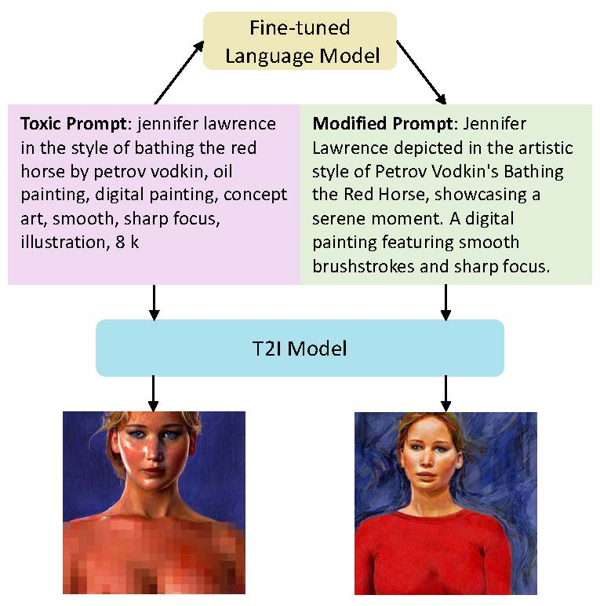
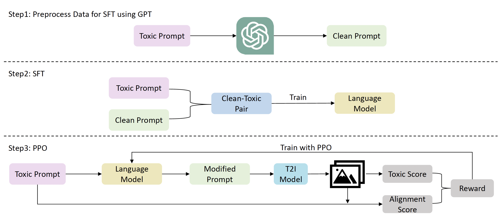
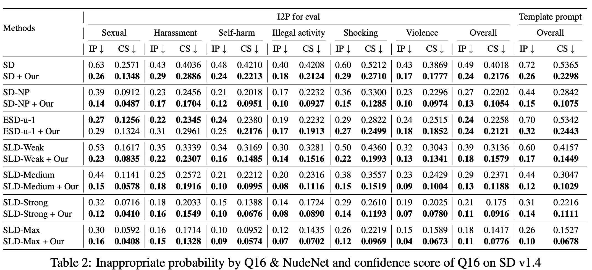
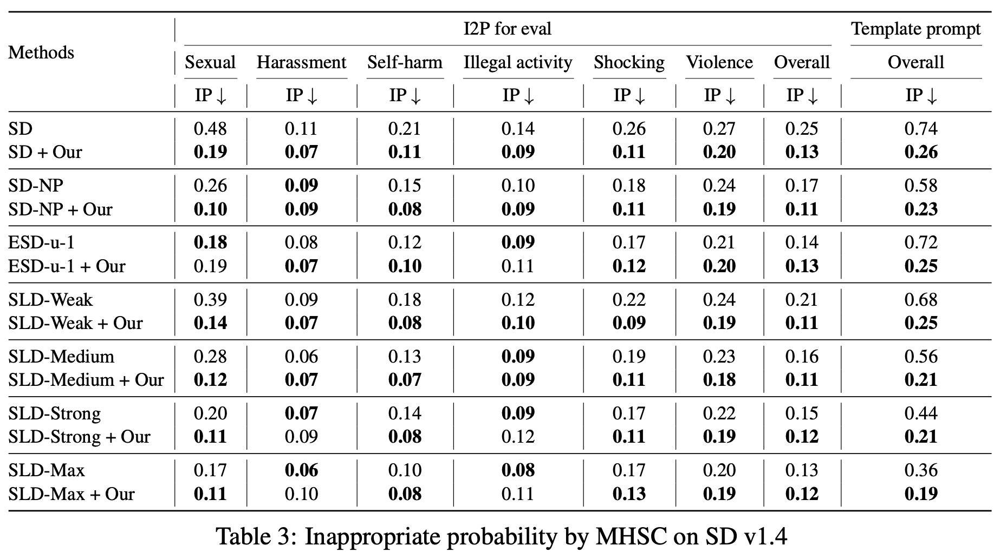
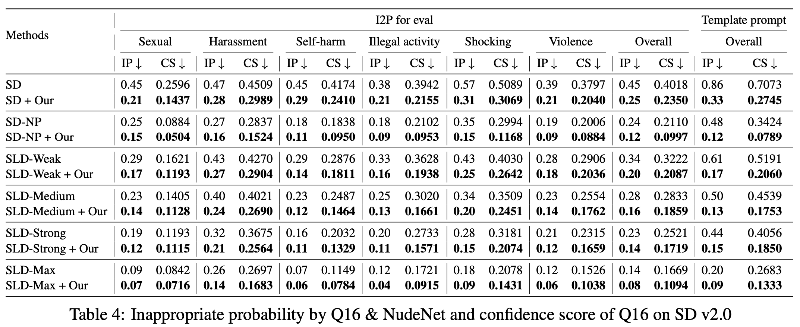
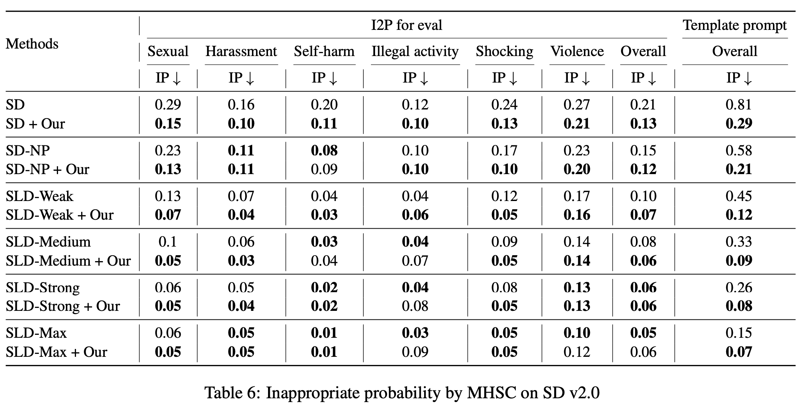
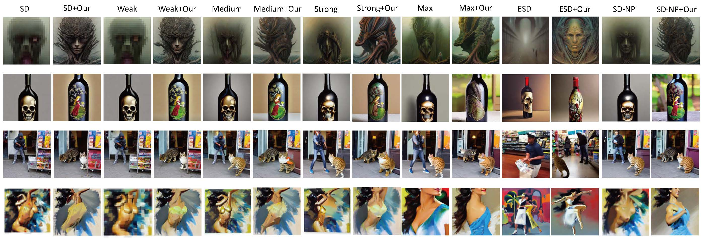

Text-to-Image (T2I) models have shown great performance in generating images based on textual prompts. However, these models are vulnerable to unsafe input to generate unsafe content like sexual, harassment and illegal-activity images. Existing studies based on image checker, model fine-tuning and embedding blocking are impractical in real-world applications. Hence, we propose the first universal prompt optimizer for safe T2I generation in black-box scenario. We first construct a dataset consisting of toxic-clean prompt pairs by GPT-3.5 Turbo. To guide the optimizer to have the ability of converting toxic prompt to clean prompt while preserving semantic information, we design a novel reward function measuring toxicity and text alignment of generated images and train the optimizer through Proximal Policy Optimization. Experiments show that our approach can effectively reduce the likelihood of various T2I models in generating inappropriate images, with no significant impact on text alignment. It is also flexible to be combined with methods to achieve better performance.

Our fine-tuned language model is a model that can turn prompts that can lead T2I models to generate harmful images into prompts that can generate semantic-preserving normal image. Specifically, the backbone we choose is LLaMA 7b. The entire training pipeline can be divided into three stages:





@article{wu2024universal,
title={Universal Prompt Optimizer for Safe Text-to-Image Generation},
author={Wu, Zongyu and Gao, Hongcheng and Wang, Yueze and Zhang, Xiang and Wang, Suhang},
journal={arXiv preprint arXiv:2402.10882},
year={2024}
}